Advanced Artificial Intelligence
Hierarchical Tasks Network
层级任务网络(hierarchical tasks network, HTN)假定游戏中有很多层级任务(hierarchical tasks)。
HTN 的核心思想是像人类那样分层制定计划。

Framework
HTN 的框架由以下几部分组成：
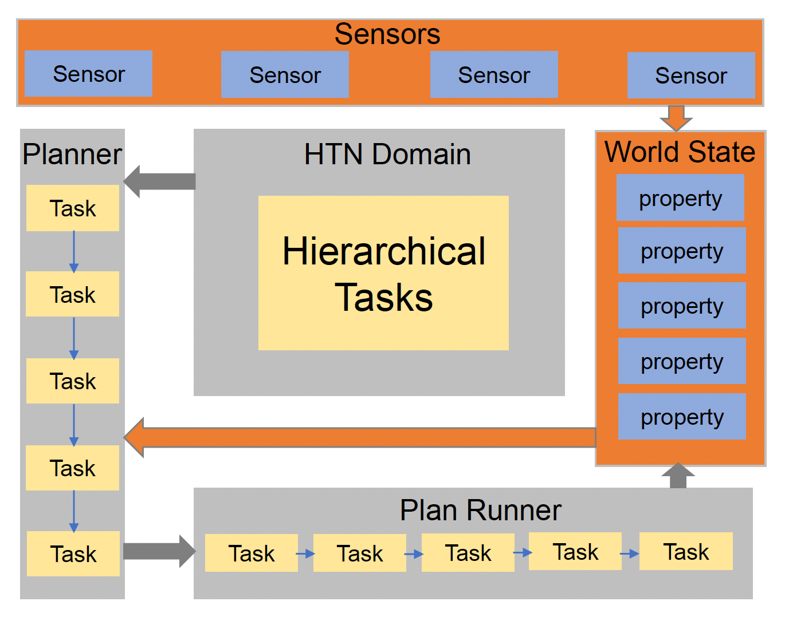
- 世界状态(world state)：
- 包含一堆属性
- 作为计划者的输入，反映了世界的状态
- 它是 AI 大脑对世界的主观(subjective)看法（不是客观存在！）
- 传感器(sensor)：
- 感知环境变化并修改世界状态
- 类似前一讲介绍的感知(perception)
- HTN 域(HTN domain)：
- 从资产处加载
- 描述层级任务的关系
- 计划者(planner)：制定从世界状态到 HTN 域的计划
- 计划运行者(plan runner)：执行计划，并在任务后更新世界状态
Task Types
层级任务分为两类：
-
基本任务(primitive task)，分为三部分：
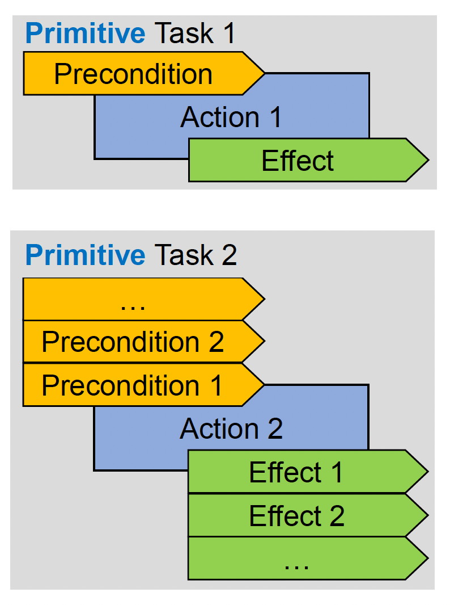
- 前提(precondition)：确定行动是否要被执行，检查游戏世界属性是否被满足
- 行动(action)：确定基本任务要执行的行动
- 效果(effect)：确定基本任务如何修改游戏世界状态属性
例子
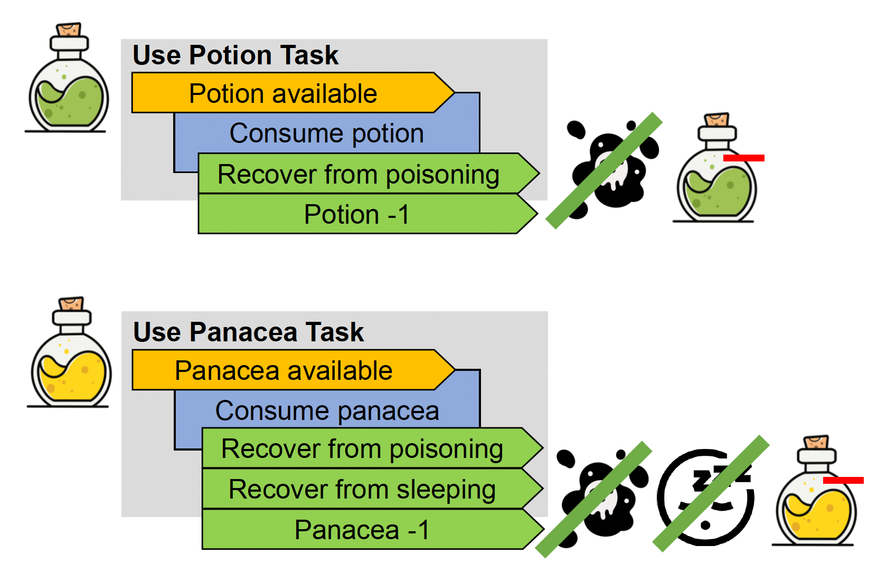
-
复合任务(compound task)：
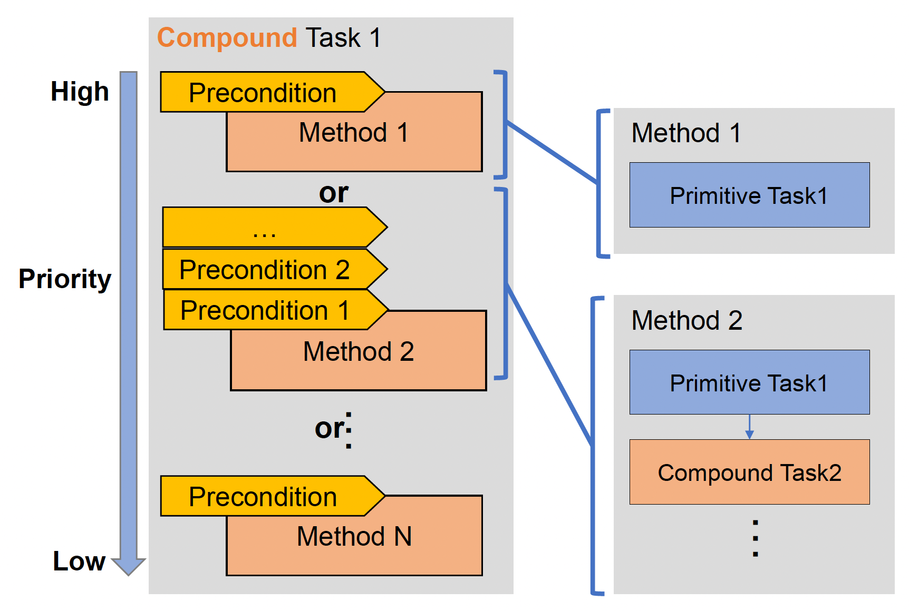
- 包含多个方法，每个方法有各自的前提和不同的优先级
- 方法(method)：一条子任务链，每个子任务可以是基本任务，也可以是复合任务
例子
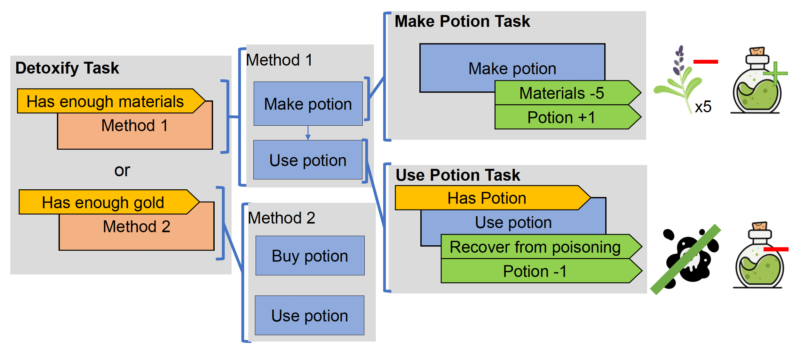
HTN 域就是将这两类任务作为基本构建块搭建而成的。需要注意的是每个 HTN 域都有一个根任务(root task)，它本质上是一个复合任务。
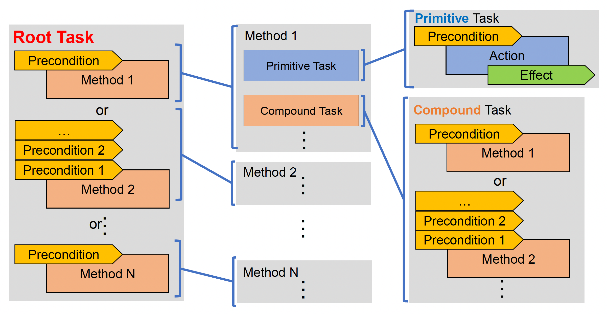
例子

Planning
确定好 HTN 域后就可以开始计划了，具体流程如下：
-
从根任务开始，按顺序选择满足前提的方法

-
将方法分解为任务，按顺序检查前提；若为复合任务，则进一步分解

-
对于基本任务
- 假设所有行动都被会成功执行，在临时内存(temporary memory)中更新世界状态
-
所以在制定计划时，世界状态有一个用作草稿的副本
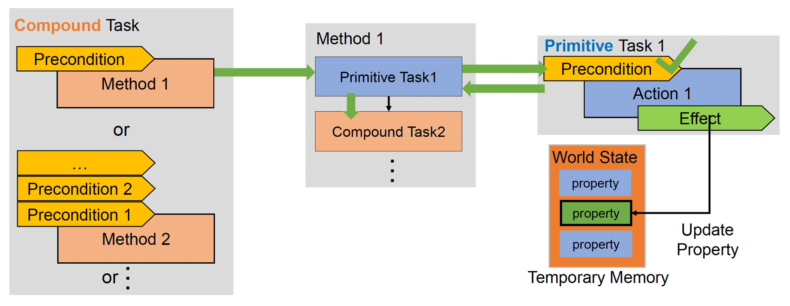
-
若前提不满足，返回并选择新方法
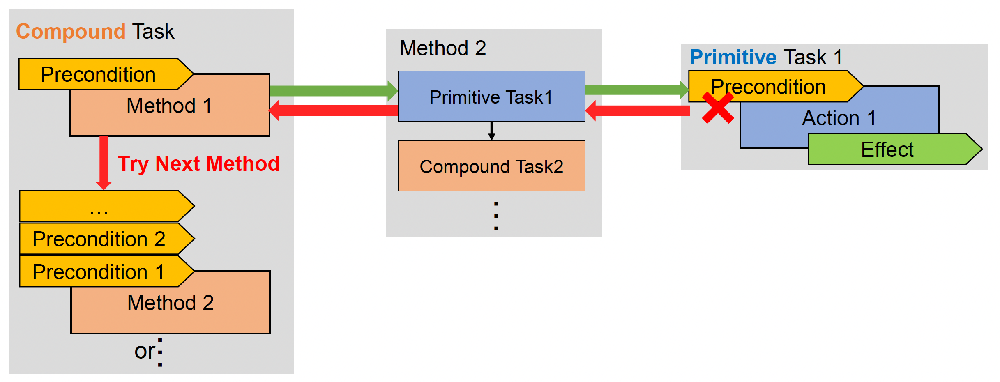
-
对于复合任务：若前提不满足，返回并选择下一个方法
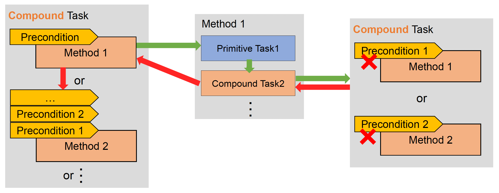
-
-
重复步骤 2，直到没有要做的任务；最终计划仅包含基本任务

例子

Running Plan and Replanning
有了计划后，接下来便要运行计划。
-
按顺序执行任务
- 检查前提，若不满足则返回失败
- 执行行动
- 若成功，则更新世界状态并返回成功
- 否则返回失败
-
当所有任务成功，或其中一个任务失败时返回
遇到以下情况之一时，智能体会开始制定计划：
- 没有计划
- 当前计划已结束或失败
- 传感器发现世界状态已改变
例子
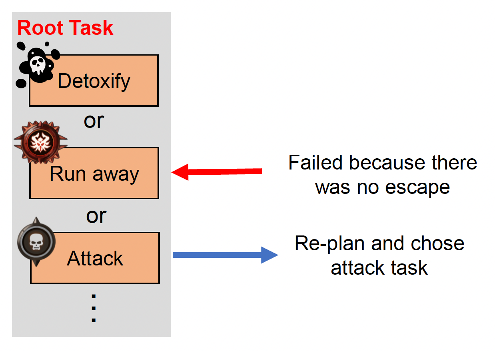
优点
- HTN 和 BT 类似，但它是更高层级的（抽象）
- 能输出具有长期影响的计划
- 相同情况下比 BT 更快
缺点
- 玩家行为不可预测，所以任务很容易失败
- 对设计师来说，世界状态和任务效果是很有挑战的
- 在高度不确定的环境下，HTN 的表现不稳定
Goal-Oriented Action Planning
面向目标的行动计划(goal-oriented action planning, GOAP)是一种更加自动化(automated)的方法，且是一种反向(backward)而非正向的计划。

Structure
GOAP 的结构如下：
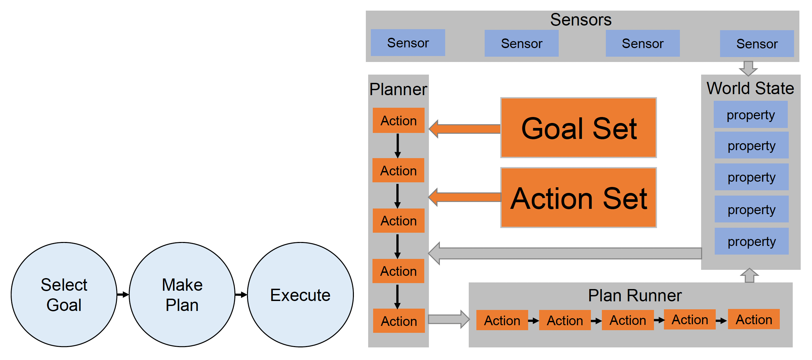
- 传感器和世界状态（和 HTN 类似）
-
目标集(goal set)：所有可用目标
- 前提决定被选中的目标
- 优先级决定在所有可能的目标中应该选择哪个目标
- 每个目标可被表示为一个状态集合(collection of states)

例子（目标选择）
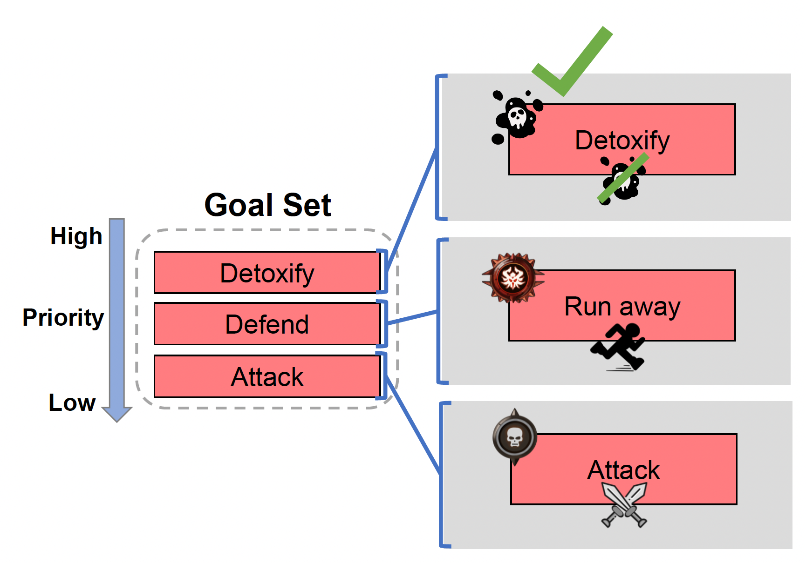
-
行动集(action set)：所有可用行动，每个行动包含
- 前提：在何种状态下角色采取行动
- 效果：行动完成后，世界状态如何变化
- 成本：由设计师定义，用作使成本最低的计划的一个权重

-
计划者(planner)：输出行动序列
Planning
GOAP 的计划制定步骤如下：
-
根据优先级检查目标，寻找第一个满足前提的目标
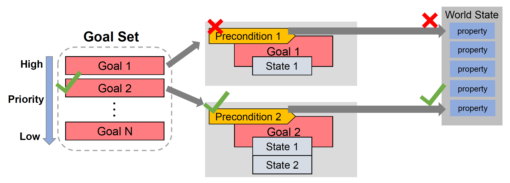
-
比较目标状态与世界状态，以找到未满足的目标；然后将所有未满足的目标状态放入栈中

-
检查栈顶的不满足状态，并从行动集中选择一个可以满足所选状态的行动；若所选动作满足该状态，则将其弹出
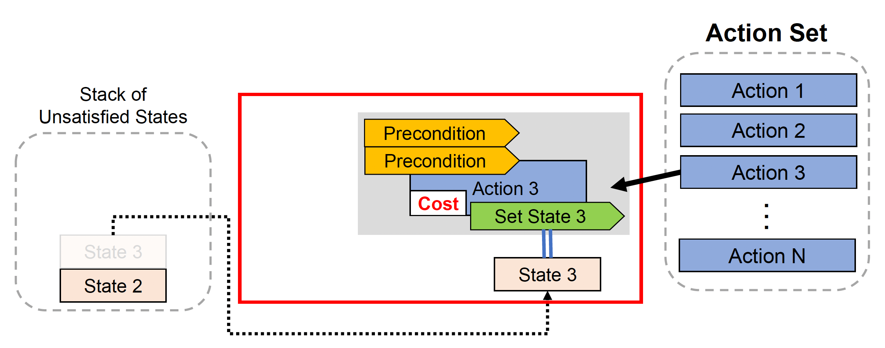
-
将行动压入计划栈(plan stack)，检查对应行动的前提；若前提不满足，则将状态压入未满足状态栈(stack of unsatisfied states)
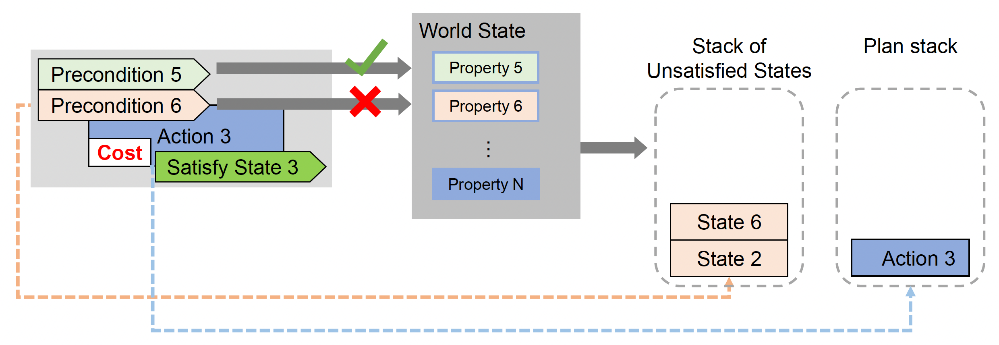
Building States-Action-Cost Graph
最后需要考虑的事是构建一个状态-行动-成本图，它不仅能够清空未满足状态栈，还保证在这张图上找到一条成本最小的路径（计划）。此时问题就被转换为上一讲介绍的寻路问题。
- 节点：状态的组合
- 边：行动
- 距离：成本
- 搜索方向：
- 起点：目标状态
- 终点：当前状态
更具体地，我们要找一条从目标状态出发，到当前状态的最短路径。我们可以采用 A* 或别的最短路算法解决这一问题。其中启发式函数可被表示为未满足状态的数量。
例子
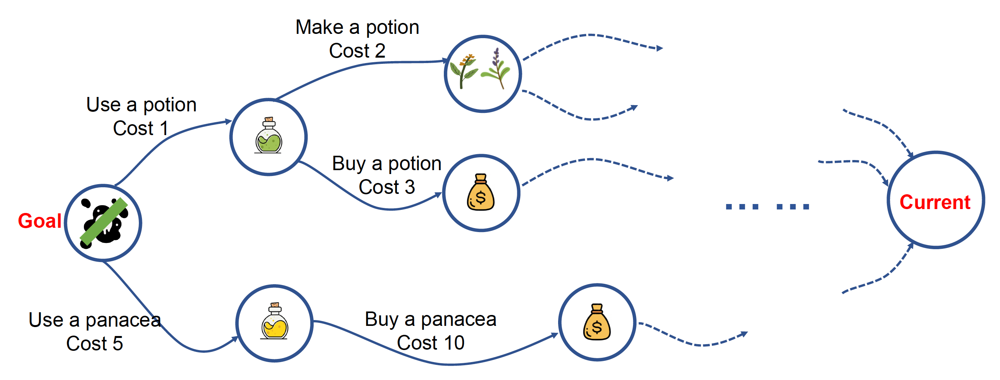
优点
- 相比 HTN，GOAP 更具动态性
- 目标和行为解耦
- 不容易出现（前提，效果）不匹配的错误
缺点
- 在单个 AI 系统中，计划运行时间比 BT/FSM/HTN 慢
- 同样需要良好表示的世界状态和行动效果
Monte Carlo Tree Search
蒙特卡洛树搜索(Monte Carlo tree search, MCTS)是另一类自动规划方法，其行为更加多样化。这种方法类似下围棋，需要在脑海中模拟数百万种可能的走法，然后选择最佳的一步。

应用

蒙特卡洛方法
蒙特卡洛方法(Monte Carlo method)是一类依赖重复随机抽样(repeated random sampling)以获得数值结果的计算算法。
美国物理学家费米研究核物理时就用到了蒙特卡洛法。
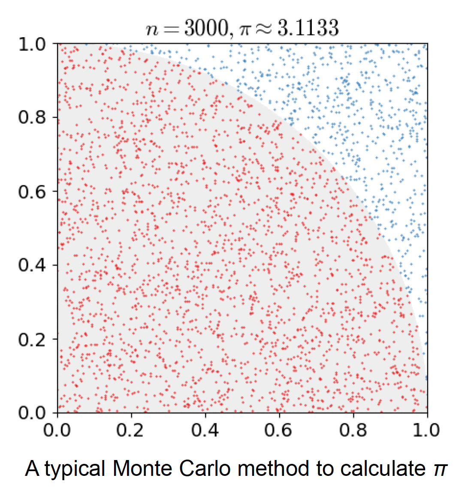
MCTS 由状态和行动构成。
-
状态：具体来说是游戏的状态，对应树的节点
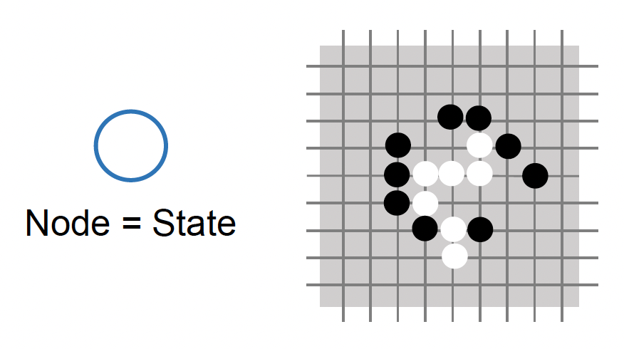
-
行动：表示 AI 的一步操作，对应树的边
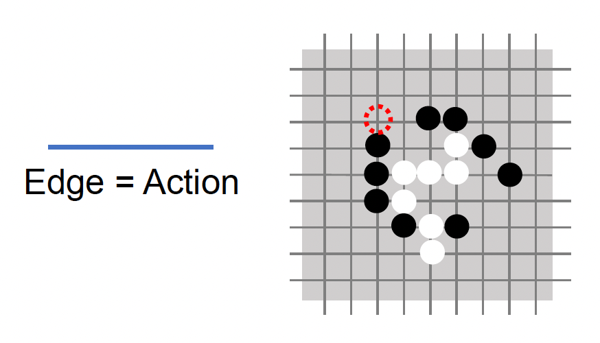
状态转移(state transfer)：通过某一行动，从状态 A 转移到状态 B
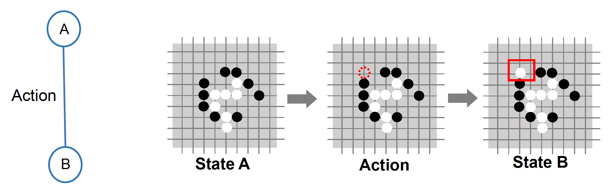
从当前状态出发，在经过可能的行动序列后可以到达的状态构成的集合被称为（树结构）状态空间(state space)。
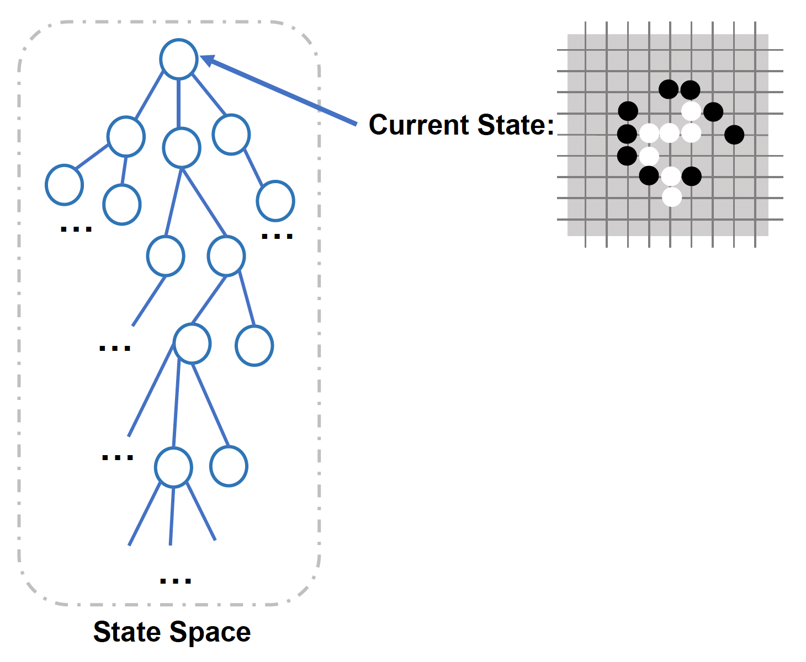
注意：每移动一步就得重新构建状态空间。

MCTS 的一个重要概念是模拟(simulation)，即从状态节点开始，根据默认策略运行，产生结果。
-
以围棋为例，即从（当前）状态开始移动随机步，直到游戏结束，返回值取决于结果（1 为胜利，0 为失败）

-
默认策略(default policy)：用于玩游戏的有用且快速的规则或者神经网络
需要注意的是，即便一次模拟中赢了，也并不代表它能始终获得胜利。要想判断每一步的好坏，我们通过一个评估因子(evaluation factor) Q/N 来衡量。其中 N 表示从当前节点开始模拟的总次数，Q 表示从当前节点开始模拟获胜的次数。

每个节点不仅要修改自己的 Q/N 值，还得向上更新父节点的 Q/N 值。这种将子节点状态的影响传播回父节点状态的操作被称为反向传播(backpropagation)。计算公式为：
Q_FatherNode += Q_BackChildNode++N_node- 重复上述步骤，直到抵达根节点

MCTS 的迭代过程：

-
选择：选择最紧急的“可扩展”节点
-
可扩展(expandable)节点——有未被访问的子节点的非终结状态
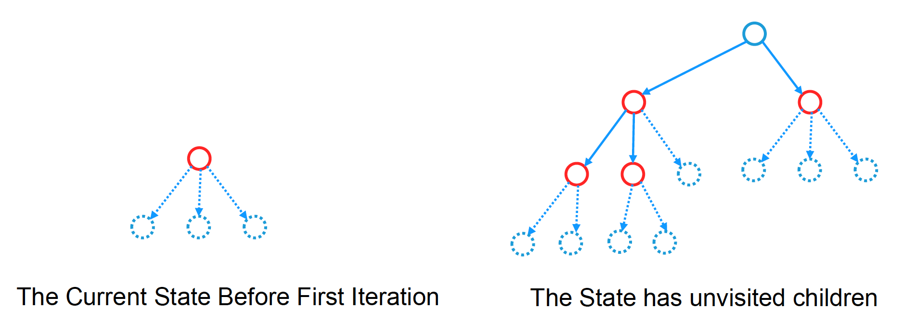
-
可采取的策略有：
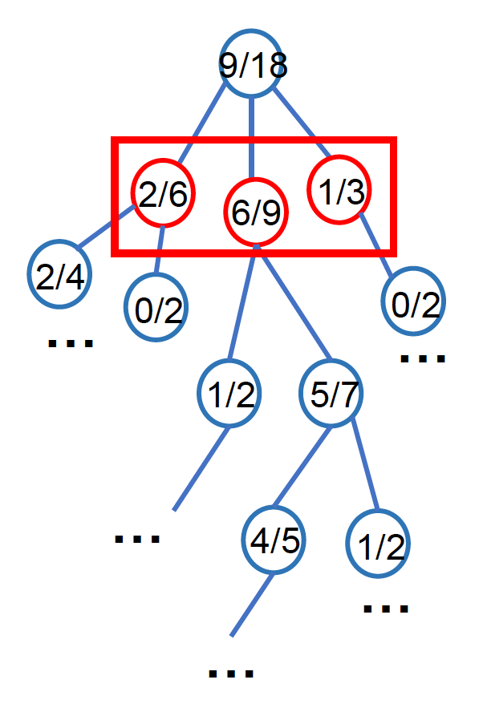
-
开发(exploitation)：寻找看似有前景的区域，即选择 Q/N 值更高的节点
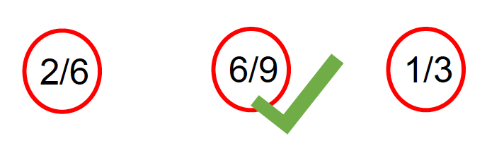
-
探索(exploration)：寻找尚未充分被采样的区域，即选择访问次数较少的孩子
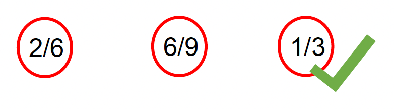
-
-
通常采用上置信区间(upper confidence bounds, UCB)公式来平衡使用开发和探索两种方案

其中：
- \(UCB_j\)：节点 \(j\) 的 UCB 值
- \(Q_j\)：所有通过节点 \(j\) 的总奖励
- \(N_j\)：节点 \(j\) 被访问的次数
- \(N\)：节点 \(j\) 的父节点被访问的次数
- \(C\)：一个用于调整执行探索次数的常数
-
综上，选择步骤可被细分为以下流程：
- 总是从根节点开始搜索
- 找到当前节点的 UCB 值最高的子节点（有前景的子节点）
- 将该子节点作为当前节点
- 重复以上步骤，直到当前节点可扩展，此时选择当前节点

-
-
扩展：通过选择一个行动来扩展树
- 根据可采取的行动，为选中节点添加一个或多个子节点
- 子节点值是未知的
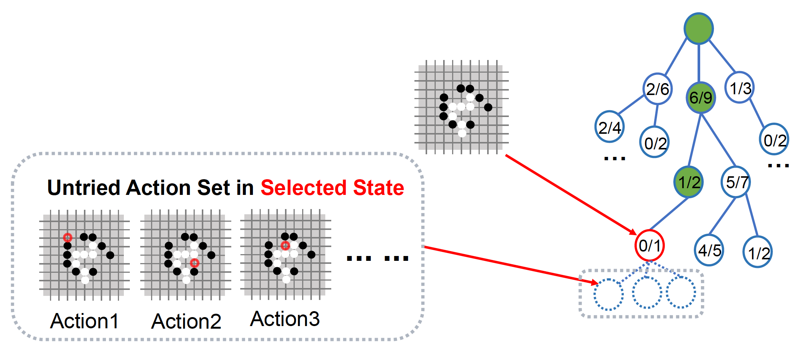
-
模拟：从新节点处模拟，并产生结果
-
反向传播：将新节点的模拟结果反向传播

结束条件：预先定义计算预算(computational budget)，当达到预算时停止探索；计算预算可以是：
- 内存大小（节点数）
- 计算时间
通过上述迭代过程，我们得到一棵完整的树，接下来就在这棵树上进行搜索。为保证每一步为最佳步，即从当前节点处选择最佳的子节点，我们可采取以下策略之一：
- 最大子节点(max child)：选择 Q 值最大的子节点
- 鲁棒子节点(robust child)：选择访问次数最多的子节点
- 最大鲁棒子节点(max-robust child)：选择具有最高访问次数和最高奖励的根子节点；若不存在这样的节点，则继续搜索，直到满足一个可接受的访问次数
-
安全子节点(secure child)：选择最大化下置信区间（LCB）的子节点
\[ LCB_j = \dfrac{Q_j}{N_j} - C \cdot \sqrt{\dfrac{2 \ln (N)}{N_j}} \]
优点
- 采用 MCTS 的智能体表现更加多样化
- 智能体完全靠自己决策
- 能够在很大的搜索空间上解决问题
缺点
对多数实时游戏而言很难设计行动和状态，以及建模。
Machine Learning Basic
机器学习(machine learning)可大致分为以下几类：

-
监督学习(supervised learning)：从标注数据(labeled data)中学习
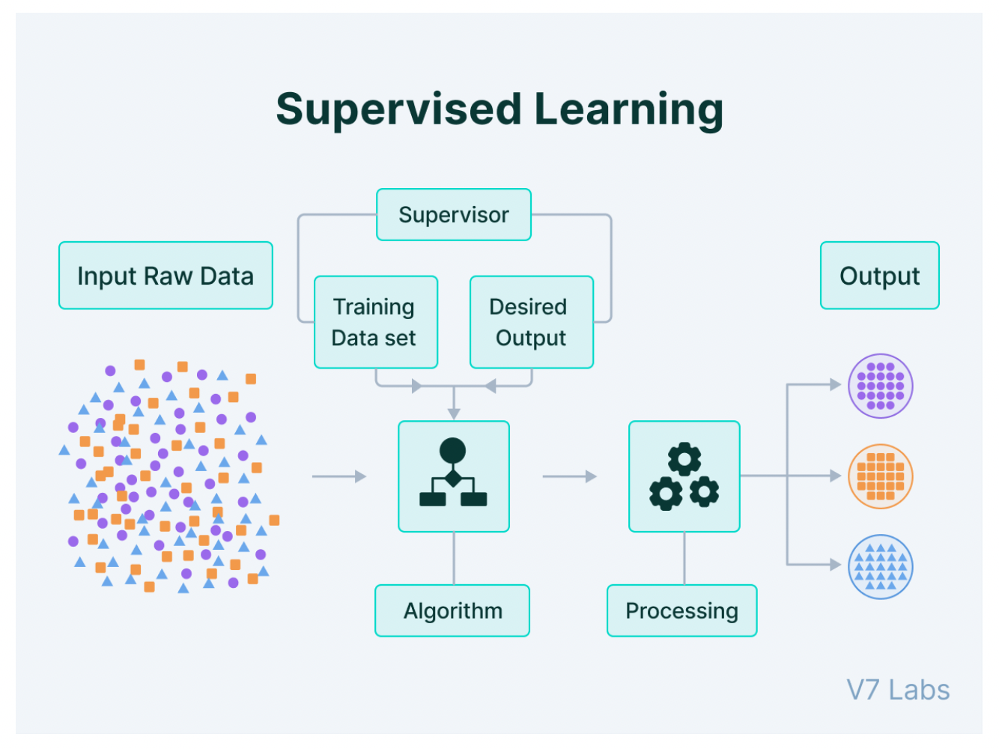
-
无监督学习(unsupervised learning)：从未标注数据(unlabeled data)中学习
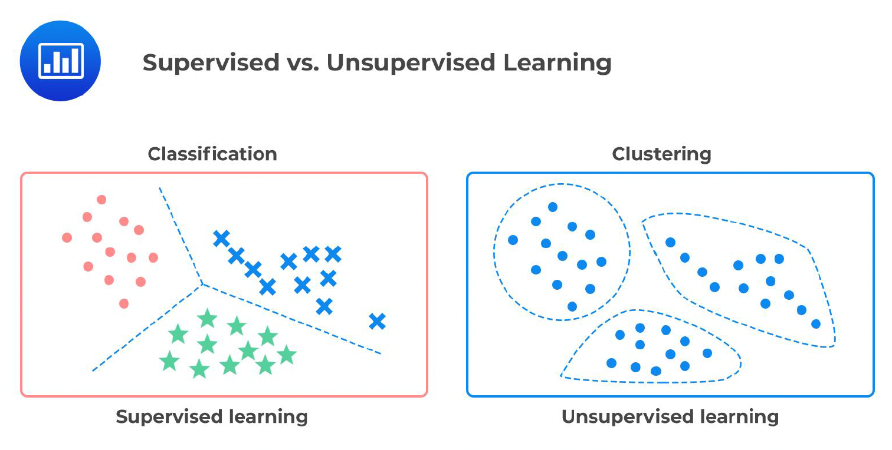
-
半监督学习(semi-supervised learning)：从大量未标注数据和少量标注数据中学习

-
强化学习(reinforcement learning, RL)：从与环境互动的过程中学习

注：和游戏引擎关系更紧密的是强化学习，所以下面仅展开介绍这一类机器学习方法。
强化学习关注智能体在环境中如何采取行动以最大化累积奖励。
- 试错搜索(trial-and-error search)：学习者必须通过尝试来发现什么行动能带来最大奖励
- 延迟奖励(delayed reward)：行为可能影响即时奖励、下一个情境以及所有后续的奖励
这里就设计到一个重要概念——马尔科夫决策过程(Markov decision process, MDP)。它的基本元素包括：

- 智能体(agent)：学习者 & 决策制定者
- 环境(environment)：与智能体交互的事物，包括智能体之外的一切东西
-
状态(state)：智能体的观察，以及人类设计的数据结构

-
行动(action)：智能体表现行为的最小元素，也是由人类设计的
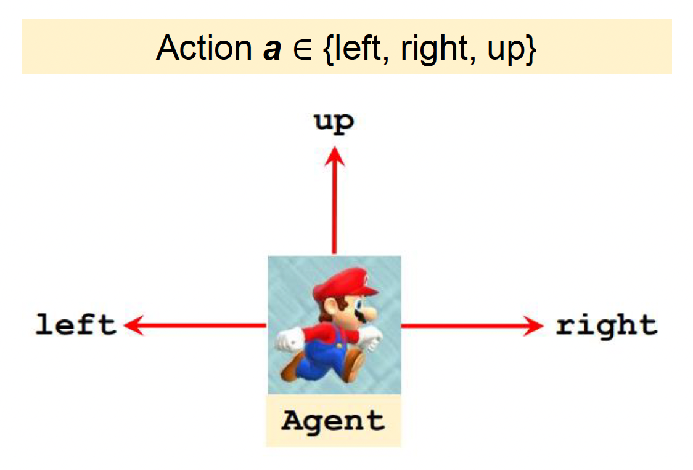
-
奖励(reward)：每个时间步从环境传递给智能体的特殊信号

MDP 的数学模型由以下部分构成：
-
转移概率(transition probability)：采取行动 \(a\) 后从 \(s\) 到 \(s'\) 转移的概率
\[ p(s' | s, a) = p(S_t = s' | S_{t-1} = s, A_{t-1} = a) \] -
策略(policy)：从状态到选择每个可能行动的概率映射
\[ \pi(a|s) = P(A_t = a | S_t = s) \]- \(\pi(a|s)\) 对应根据状态 \(s\) 采取行动 \(A = a\) 的概率
- 实际上观察到状态 \(S = s\) 时，智能体采取的行动 \(A\) 是随机的
-
例子：\(\pi(\text{left}|s) = 0.2, \pi(\text{right}|s) = 0.1, \pi(\text{up}|s) = 0.7\)
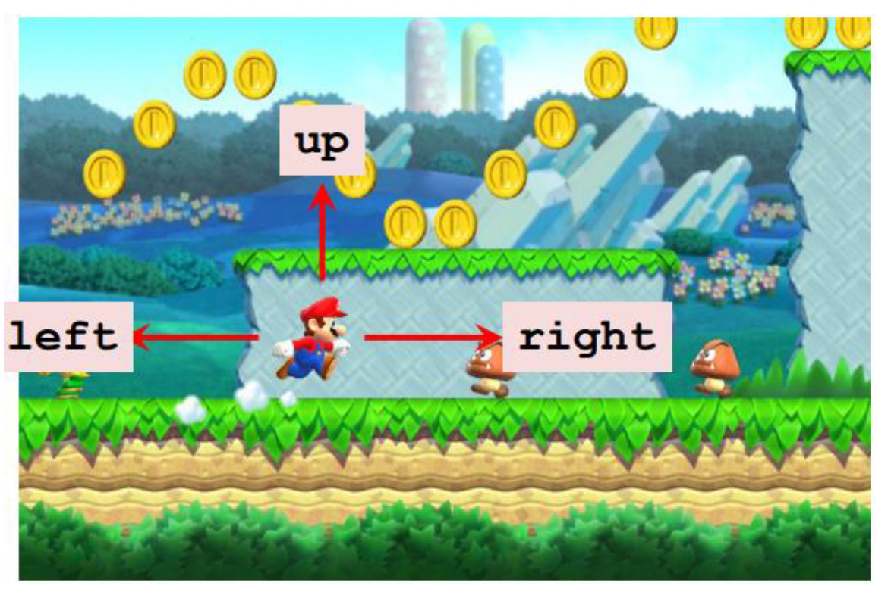
-
总奖励(total reward)：长期接收的累积奖励
\[ \begin{aligned} G_t & = R_{t+1} + R_{t+2} + R_{t+3} + \dots + R_T \\ G_t & = R_{t+1} + \gamma R_{t+2} + \gamma^2 R_{t+3} + \dots \end{aligned} \]其中第二种计算方式引入系数 \(\gamma (< 1)\)，表示越后面的奖励计算越不靠谱，因此对应的系数会越小；一般设置为接近 1 的数值（比如 0.99, 0.98, 0.95 等）。
Building Advanced Game AI
最后一节会介绍如何利用机器学习技术让游戏中的 AI「更聪明」。引入机器学习的原因有：
- 不难发现，之前讲过的所有 AI 方法实际上都需要人类知识来设计，比如计算 GOAP 的成本等等
- 但玩家始终希望 AI 能够应对复杂的游戏世界，并且能够表现得自然且多样
- 传统方法仅在有限空间中计算
- 机器学习可创造无穷可能性
游戏中的机器学习框架的构成如下。其中一个重要的概念是观察(observation)，即AI 观察到的游戏状态，包括：向量特征（单位信息、环境信息...），图像等。
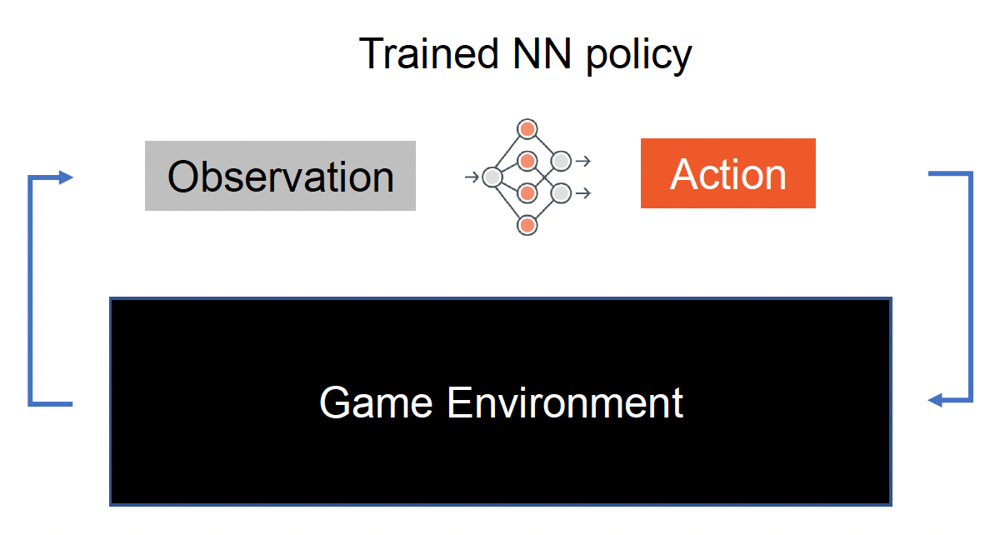
以 DRL（深度强化学习）（更具体来说是 AlphaStar）为例，其设计过程需包含状态、行动、奖励、NN（神经网络）设计和训练策略。
-
状态

-
地图

-
单位信息
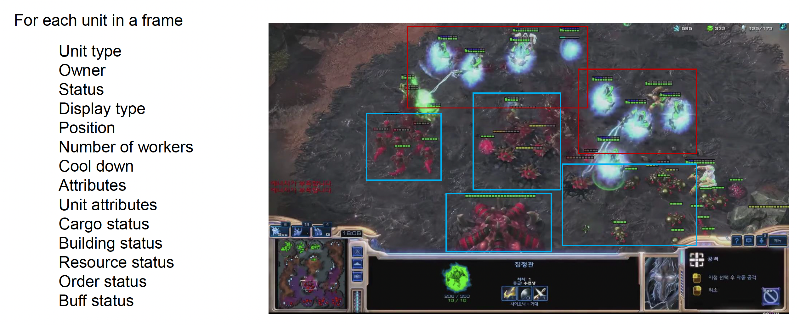
-
-
行动
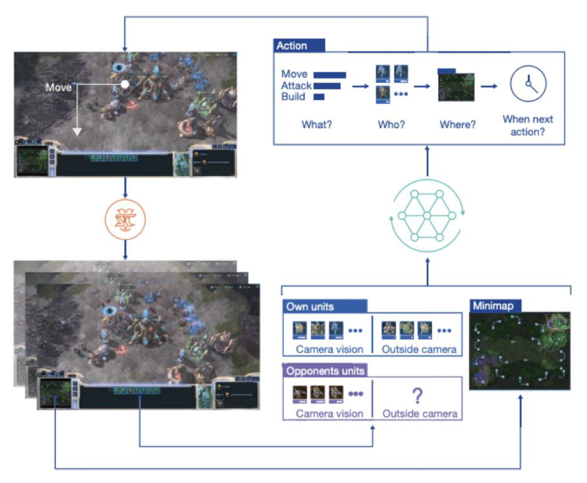
-
奖励
- 来自游戏的直接奖励：胜利 +1，失败 -1
-
伪奖励输出及批评网络(critic network)
- 比如智能体操作与人类数据统计 z 的距离
-
不同的奖励设置可以帮助我们训练不同风格的智能体，比如更具侵略性或更保守
-
例子：Dota2 的 OpenAI Five
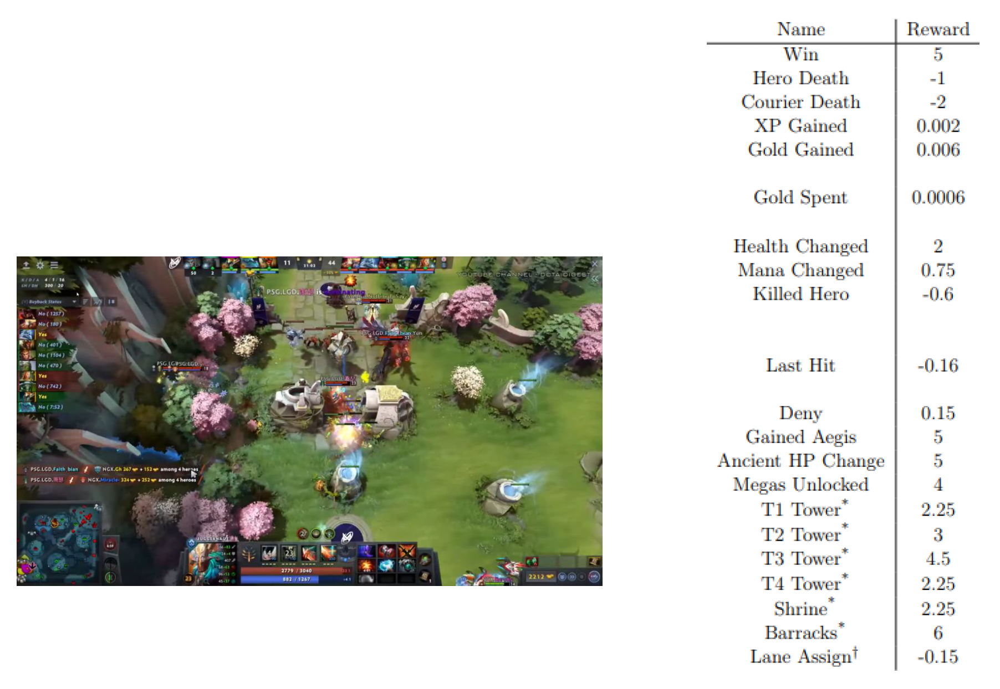
-
NN Architectrue
AlphaStar 的神经网络架构如下：
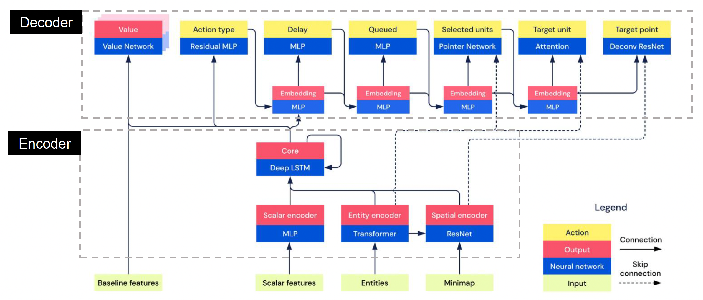
-
多层感知机(multi-layer perceptron, MLP)
- 经典，且易实现
- 输入和输出的维度可灵活定义
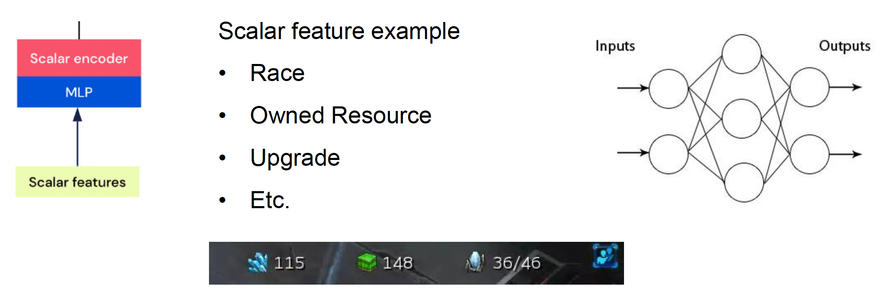
-
卷积神经网络(convolutional neural network, CNN)：专注于图像数据处理

-
Transformer
- 引入注意力机制
- 不确定的向量长度
- 可以表示像多智能体那样的复杂特征

-
长短期记忆(long-short term memory, LSTM)：使 AI 记住或遗忘更早的数据
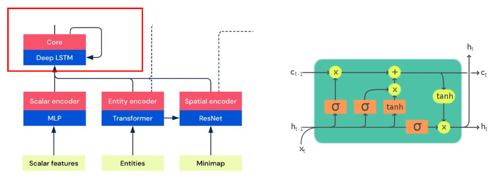
根据特征类型的不同，NN 架构也有不同的选择。特征类型可以是：
- 定长向量特征 -> MLP
- 变长向量特征 -> LSTM, Transformer
- 图像特征 -> ResNet
- 射线投射
- 网格
Training Strategies
AlphaStar 同时采取以下训练策略。训练顺序是：
-
监督学习
- z 是从人类数据（比如建造顺序）中抽取策略的统计摘要
- 目标：最小化智能体策略与从 z 采样到的人类决策分布之间的距离（KL 散度）

-
强化学习
- TD(λ)、V-trace、UPGO 是用于改进参与者网络和批评者网络的特定 RL 方法
- 也会考虑先前 SL 策略的 KL 散度
- 这些技巧改进了策略，使智能体更接近人类行为

-
自我游玩和对抗：在 AlphaStar 中，三个智能体池参加从 SL 策略初始化的训练
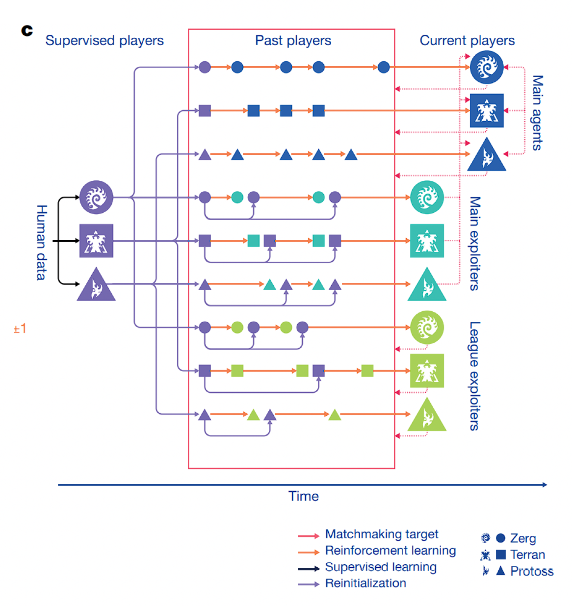
-
主智能体 [MA]
- 目标：最鲁棒和输出
- 自我对弈（35%）
- 与过去的 LE 和 ME 智能体对战（50%）
- 与过去的 MA 对战（15%）
-
联盟利用者 [LE]
- 目标：找出所有过去智能体（MA、LE、ME）的弱点
- 与所有过去的智能体（MA、LE、ME）对战
-
主利用者 [ME]
- 目标：找出当前主智能体的弱点
- 与当前主智能体对战
-
那么究竟是选择 SL 好还是 RL 好呢？
-
SL
- 监督学习需要高质量的数据，有时表现也相当好
- 智能体行为接近人类，但可能无法超越人类专家数据
- 人类数据不均衡，且有时数据量不足
- 适用场景：获取数据容易，且需要表现得和人类相似
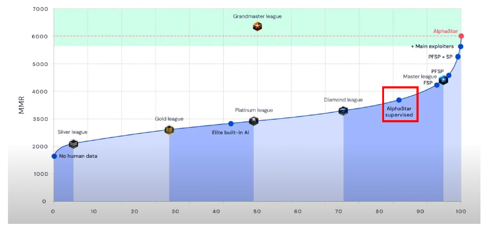
-
RL：虽然通常被认为是最优策略，但训练 RL 模型相当困难
- 模型难以收敛
- 训练的游戏环境也是一个巨大的开发项目
- 数据收集过程很慢
- 行为可能不自然
- 如果奖励过于稀疏，也不利好 RL
例子
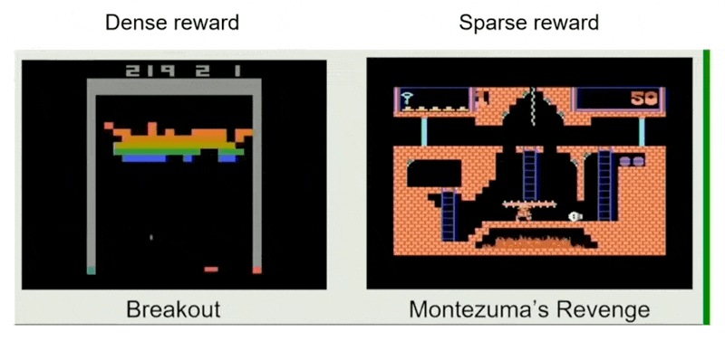
- 适用场景：需要有大师级的表现，足够多的预算，数据不可用，奖励稠密
虽然机器学习非常强大，但它的成本也很高。比如 DeepMind 搭建 AlphaStar 花费了 2.5 亿美元，而且即便是复制品也要 1300 万美元。因此我们常常需要在将 DRL 放置在人类水平（整体战斗的一部分）之间进行权衡。
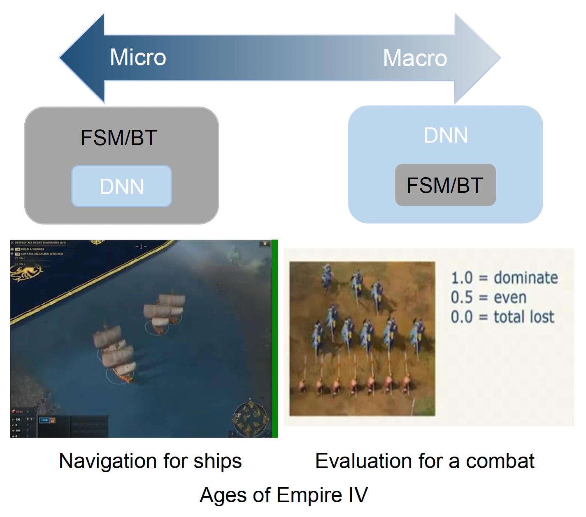
评论区